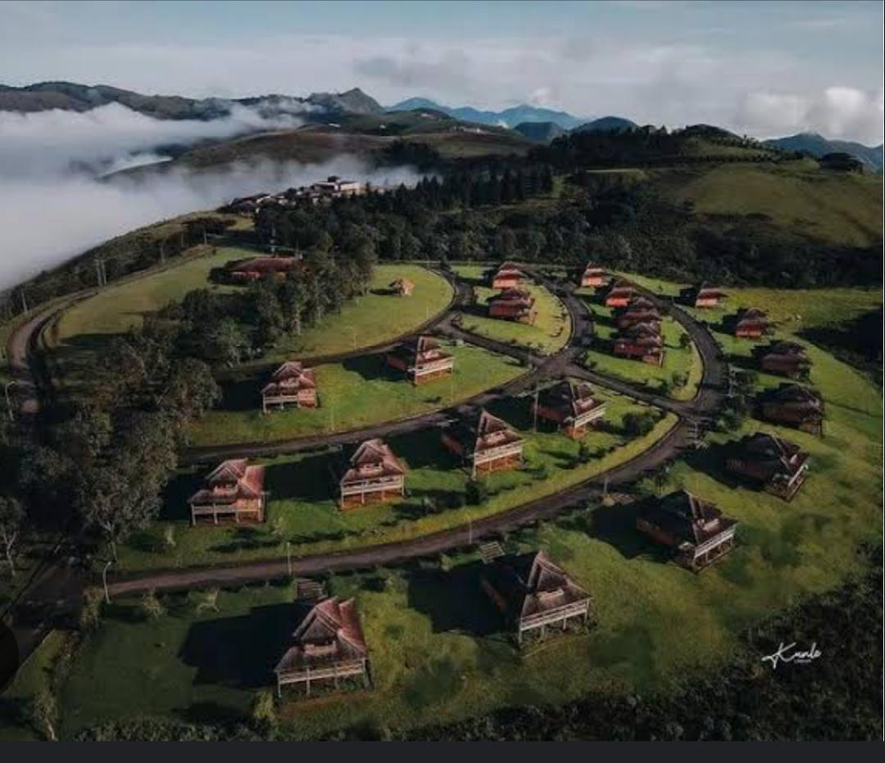
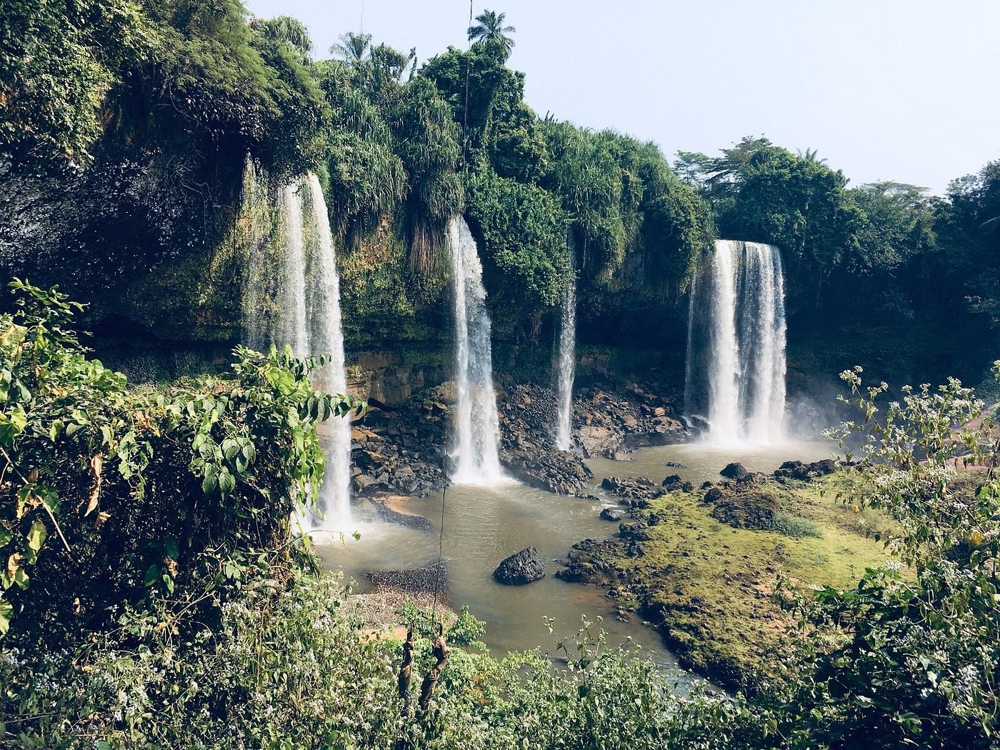

Tourist Attractions Site
Obudu Cattle Ranch
Obudu Cattle Ranch is a beautiful resort located in the mountains of Cross River State, Nigeria. It is known for its stunning views, cool climate, and luxurious accommodations.
The resort offers a range of activities including hiking, bird watching, and exploring the rich biodiversity of the area. Visitors can also enjoy the cable car ride that provides panoramic views of the surrounding landscape.
Agbokim Waterfalls
Agbokim Waterfalls is a stunning natural attraction located in the Cross River National Park. The waterfalls are surrounded by lush greenery and offer a serene environment for visitors.
The area is perfect for picnics, hiking, and bird watching, making it a great spot for nature lovers.